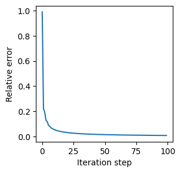
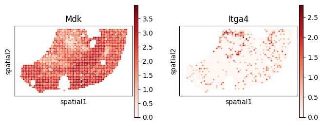

MOSTA (Stereoseq) Analysis Tutorial
Data availability: All processed spatial transcriptomics datasets are publicly available on Zenodo: https://doi.org/10.5281/zenodo.17522268
[1]:
from models.SCILD_main import *
from models.help_func import create_LRDatabase_D, compute_spatial_autocorrelation
import scanpy as sc
import squidpy as sq
import warnings
warnings.filterwarnings('ignore')
np.random.seed(42)
Import data
[2]:
adata = sc.read_h5ad('./data/MOSTAStereoseq_adata_processed.h5ad')
adata
[2]:
AnnData object with n_obs × n_vars = 1800 × 11091
obs: 'annotation'
uns: 'annotation_colors'
obsm: 'spatial'
[3]:
plt.rcParams['figure.figsize'] = [3, 3]
sc.pl.spatial(adata, spot_size=1, color=['annotation'], img_key=None)

Create L-R database
[4]:
LRDatabase_D = create_LRDatabase_D(
adata,
min_cell_pct=0.01,
database='CellChat',
species='mouse'
)
[5]:
LRDatabase_D.shape
[5]:
(52, 73)
Run SCILD
[6]:
CCCProb = SCILD(adata=adata,
LRDatabase_D=LRDatabase_D,
neighbor_k=10,
alpha_q=0.1,
alpha_f=0.1,
alpha_g=0.1,
niter_max=100,
eps=1e-4,
verbose=True,
plot_error=True
)
CCCProb.preparing()
nl = CCCProb.nl
nr = CCCProb.nr
ns = CCCProb.ns
print('The number of ligand is: ' + str(nl))
print('The number of receptor is: ' + str(nr))
print('The number of spot is: ' + str(ns))
*************Preparing*************
neighbor_k: 10
The number of ligand is: 52
The number of receptor is: 73
The number of spot is: 1800
[7]:
CCCProb.rho
[7]:
<1800x1800 sparse matrix of type '<class 'numpy.float64'>'
with 421398 stored elements in Compressed Sparse Column format>
[8]:
mu0 = np.random.random(nl * ns).reshape(-1, 1)
v0 = np.random.random(nr * ns).reshape(-1, 1)
CCCProb.solving_optimization(mu0, v0)
*************Solving*************
The relative error is: 0.057913579726643565
The relative error is: 0.032907434168877134
The relative error is: 0.023664535909631936
The relative error is: 0.018686557739523574
The relative error is: 0.01551852909818684
The relative error is: 0.013305616577467962
The relative error is: 0.011662519736065904
The relative error is: 0.010390169550352428
The relative error is: 0.009373708030977094
The relative error is: 0.008541819268939457
The final relative error is: 0.008541819268939457
The total iteration step is: 100

[9]:
CCCProb.adata
[9]:
AnnData object with n_obs × n_vars = 1800 × 11091
obs: 'annotation'
uns: 'annotation_colors'
obsm: 'spatial', 'sum-sender-Q', 'sum-sender-P', 'sum-receiver'
Extract LR CCC
[10]:
CCCProb.query_all_LR()
[11]:
CCCProb.tensor_P.shape
[11]:
(1800, 1800, 52, 73)
[12]:
res_dict = tensor_to_method_result(CCCProb.tensor_P,
list(CCCProb.LRDatabase_D.index),
list(CCCProb.LRDatabase_D.columns))
len(res_dict)
[12]:
3796
[13]:
res_dict = filter_method_result_by_LR_database(res_dict, CCCProb.LRDatabase_D)
len(res_dict)
[13]:
196
[14]:
import pickle
with open("./results/MOSTAStereoseq_SCILD_result.pkl", "wb") as f:
pickle.dump(res_dict, f)
Visualization
select L-Rs to show (spatial)
[15]:
CCC_df = CCCProb.compute_TSSR()
CCC_adata = sc.AnnData(CCC_df)
CCC_adata.obsm['spatial'] = adata.obsm['spatial']
CCC_adata
[15]:
AnnData object with n_obs × n_vars = 1800 × 392
obsm: 'spatial'
[16]:
LR_df_spatial = compute_spatial_autocorrelation(CCC_adata)
LR_df_spatial.sort_values('moran_I', ascending=False).head()
[16]:
| moran_I | p_value | |
|---|---|---|
| Fgf10->Fgfr2 (R) | 0.871836 | 0.0 |
| Igf2->Itgb3 (S) | 0.849619 | 0.0 |
| Mif->Ackr3 (S) | 0.824791 | 0.0 |
| Igf2->Igf2r (S) | 0.822429 | 0.0 |
| Fgf2->Fgfr2 (R) | 0.787582 | 0.0 |
[17]:
CCCProb.adata.obs[CCC_df.columns] = CCC_df
CCCProb.adata.obs.head()
[17]:
| annotation | Angpt1->Tek (S) | Angpt1->Tek (R) | Angptl2->Itga5 (S) | Angptl2->Itga5 (R) | Angptl2->Itgb1 (S) | Angptl2->Itgb1 (R) | Angptl4->Cdh11 (S) | Angptl4->Cdh11 (R) | Angptl4->Cdh5 (S) | ... | Wnt6->Fzd6 (S) | Wnt6->Fzd6 (R) | Wnt6->Fzd7 (S) | Wnt6->Fzd7 (R) | Wnt6->Fzd8 (S) | Wnt6->Fzd8 (R) | Wnt6->Lrp5 (S) | Wnt6->Lrp5 (R) | Wnt6->Lrp6 (S) | Wnt6->Lrp6 (R) | |
|---|---|---|---|---|---|---|---|---|---|---|---|---|---|---|---|---|---|---|---|---|---|
| cell_name | |||||||||||||||||||||
| 149_96 | Connective tissue | 8.292575e-32 | 4.404096e-08 | 9.791700e-02 | 3.548117e-01 | 7.212879e-01 | 6.343067e-01 | 4.276637e-83 | 5.478329e-02 | 1.940599e-84 | ... | 3.857117e-02 | 1.419980e-10 | 1.716632e-01 | 1.071790e-01 | 2.528552e-02 | 1.420040e-10 | 5.769405e-02 | 1.441067e-10 | 2.056201e-02 | 1.441099e-10 |
| 149_97 | Connective tissue | 7.842926e-32 | 1.531621e-08 | 2.963054e-42 | 2.725040e-09 | 1.851269e-41 | 5.499427e-01 | 4.389269e-83 | 4.849022e-10 | 1.911175e-84 | ... | 7.448078e-02 | 1.051193e-10 | 2.776903e-01 | 1.075259e-01 | 3.547998e-02 | 1.051327e-10 | 1.007447e-01 | 1.072201e-10 | 3.816787e-02 | 1.072188e-10 |
| 149_98 | Connective tissue | 7.874489e-01 | 6.623214e-01 | 3.139935e-42 | 4.318802e-09 | 1.728480e-41 | 3.424137e-01 | 4.150145e-83 | 9.601883e-02 | 1.892009e-84 | ... | 6.997575e-02 | 1.070293e-10 | 2.495540e-01 | 1.339517e-01 | 2.572945e-02 | 1.070190e-10 | 1.101124e-01 | 1.115647e-10 | 3.338618e-02 | 1.115737e-10 |
| 150_112 | Dermomyotome | 4.075063e-37 | 5.830013e-08 | 2.840296e-44 | 2.838798e-09 | 3.377251e-42 | 2.804100e-09 | 2.734752e-83 | 7.118963e-05 | 7.337092e-88 | ... | 1.456950e-92 | 1.987944e-11 | 9.528977e-87 | 2.344476e-11 | 2.531886e-88 | 1.988059e-11 | 4.116900e-87 | 2.344359e-11 | 1.892316e-88 | 2.012374e-11 |
| 150_95 | Connective tissue | 8.275560e-32 | 6.023706e-08 | 8.056125e-02 | 5.376056e-09 | 6.513164e-01 | 6.737176e-01 | 4.029761e-83 | 6.625678e-02 | 1.432219e-84 | ... | 4.513681e-02 | 3.106310e-10 | 2.771546e-01 | 1.049772e-01 | 3.819814e-02 | 1.049772e-01 | 1.105208e-01 | 3.196844e-10 | 5.247292e-02 | 3.196825e-10 |
5 rows × 393 columns
[18]:
plt.rcParams['figure.figsize'] = [3, 3]
sc.pl.spatial(CCCProb.adata, spot_size=1, color="Mdk->Itga4 (S)", cmap='Reds', img_key=None)

[19]:
plt.rcParams['figure.figsize'] = [3, 3]
sc.pl.spatial(CCCProb.adata, spot_size=1, color=["Mdk", "Itga4"], cmap='Reds', img_key=None)

Cell-group level results
[20]:
from models.help_func import aggregate_to_group
cell_to_group = adata.obs['annotation'].to_dict()
group_result = {}
for lr_key, matrix in res_dict.items():
group_matrix = aggregate_to_group(matrix, cell_to_group)
group_result[lr_key] = group_matrix.values
[ ]: